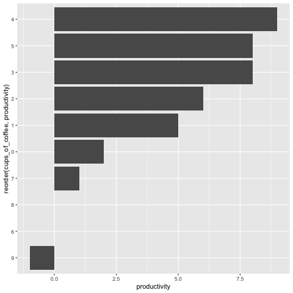

Mixed Python and R
Mixed Python and R¶
%load_ext rpy2.ipython
import pandas as pd
import numpy as np
df = pd.DataFrame({
'cups_of_coffee': [0, 1, 2, 3, 4, 5, 6, 7, 8, 9],
'productivity': [2, 5, 6, 8, 9, 8, 0, 1, 0, -1]
})
df.transpose()
| 0 | 1 | 2 | 3 | 4 | 5 | 6 | 7 | 8 | 9 | |
|---|---|---|---|---|---|---|---|---|---|---|
| cups_of_coffee | 0 | 1 | 2 | 3 | 4 | 5 | 6 | 7 | 8 | 9 |
| productivity | 2 | 5 | 6 | 8 | 9 | 8 | 0 | 1 | 0 | -1 |
%%R -i df
library(ggplot2)
ggplot(df, aes(x=reorder(cups_of_coffee,productivity), y=productivity)) + geom_col() + coord_flip()

%%R -i df
library(DT)
# this opens it in a new tab :(
datatable(df)
R[write to console]: Error in library(DT) : there is no package called ‘DT’
Error in library(DT) : there is no package called ‘DT’
---------------------------------------------------------------------------
RRuntimeError Traceback (most recent call last)
File ~/.local/share/virtualenvs/migrate-to-jupyter-Ble6S9F6/lib/python3.9/site-packages/rpy2/ipython/rmagic.py:268, in RMagics.eval(self, code)
266 try:
267 # Need the newline in case the last line in code is a comment.
--> 268 value, visible = ro.r("withVisible({%s\n})" % code)
269 except (ri.embedded.RRuntimeError, ValueError) as exception:
270 # Otherwise next return seems to have copy of error.
File ~/.local/share/virtualenvs/migrate-to-jupyter-Ble6S9F6/lib/python3.9/site-packages/rpy2/robjects/__init__.py:438, in R.__call__(self, string)
437 p = rinterface.parse(string)
--> 438 res = self.eval(p)
439 return conversion.rpy2py(res)
File ~/.local/share/virtualenvs/migrate-to-jupyter-Ble6S9F6/lib/python3.9/site-packages/rpy2/robjects/functions.py:198, in SignatureTranslatedFunction.__call__(self, *args, **kwargs)
197 kwargs[r_k] = v
--> 198 return (super(SignatureTranslatedFunction, self)
199 .__call__(*args, **kwargs))
File ~/.local/share/virtualenvs/migrate-to-jupyter-Ble6S9F6/lib/python3.9/site-packages/rpy2/robjects/functions.py:125, in Function.__call__(self, *args, **kwargs)
124 new_kwargs[k] = conversion.py2rpy(v)
--> 125 res = super(Function, self).__call__(*new_args, **new_kwargs)
126 res = conversion.rpy2py(res)
File ~/.local/share/virtualenvs/migrate-to-jupyter-Ble6S9F6/lib/python3.9/site-packages/rpy2/rinterface_lib/conversion.py:45, in _cdata_res_to_rinterface.<locals>._(*args, **kwargs)
44 def _(*args, **kwargs):
---> 45 cdata = function(*args, **kwargs)
46 # TODO: test cdata is of the expected CType
File ~/.local/share/virtualenvs/migrate-to-jupyter-Ble6S9F6/lib/python3.9/site-packages/rpy2/rinterface.py:680, in SexpClosure.__call__(self, *args, **kwargs)
679 if error_occured[0]:
--> 680 raise embedded.RRuntimeError(_rinterface._geterrmessage())
681 return res
RRuntimeError: Error in library(DT) : there is no package called ‘DT’
During handling of the above exception, another exception occurred:
RInterpreterError Traceback (most recent call last)
Input In [3], in <module>
----> 1 get_ipython().run_cell_magic('R', '-i df', 'library(DT)\n# this opens it in a new tab :(\ndatatable(df)\n')
File ~/.local/share/virtualenvs/migrate-to-jupyter-Ble6S9F6/lib/python3.9/site-packages/IPython/core/interactiveshell.py:2257, in InteractiveShell.run_cell_magic(self, magic_name, line, cell)
2255 with self.builtin_trap:
2256 args = (magic_arg_s, cell)
-> 2257 result = fn(*args, **kwargs)
2258 return result
File ~/.local/share/virtualenvs/migrate-to-jupyter-Ble6S9F6/lib/python3.9/site-packages/rpy2/ipython/rmagic.py:783, in RMagics.R(self, line, cell, local_ns)
781 if not e.stdout.endswith(e.err):
782 print(e.err)
--> 783 raise e
784 finally:
785 if self.device in ['png', 'svg']:
File ~/.local/share/virtualenvs/migrate-to-jupyter-Ble6S9F6/lib/python3.9/site-packages/rpy2/ipython/rmagic.py:763, in RMagics.R(self, line, cell, local_ns)
761 return_output = False
762 else:
--> 763 text_result, result, visible = self.eval(code)
764 text_output += text_result
765 if visible:
File ~/.local/share/virtualenvs/migrate-to-jupyter-Ble6S9F6/lib/python3.9/site-packages/rpy2/ipython/rmagic.py:272, in RMagics.eval(self, code)
269 except (ri.embedded.RRuntimeError, ValueError) as exception:
270 # Otherwise next return seems to have copy of error.
271 warning_or_other_msg = self.flush()
--> 272 raise RInterpreterError(code, str(exception),
273 warning_or_other_msg)
274 text_output = self.flush()
275 return text_output, value, visible[0]
RInterpreterError: Failed to parse and evaluate line 'library(DT)\n# this opens it in a new tab :(\ndatatable(df)\n'.
R error message: 'Error in library(DT) : there is no package called ‘DT’'